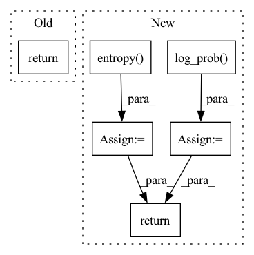

Pattern ID :14233
Before Change
super().__init__()
def forward(self, x):
return x
class Student(nn.Module):
def __init__(After Change
)
action = dist.sample()
action_log_probs = dist.log_prob( actions)
entropy = dist.entropy()
ratios = (action_log_probs - old_log_probs).exp()
advantages = normalize(rewards - old_values.detach())
surr1 = ratios * advantages
surr2 = ratios.clamp(1 - self.eps_clip, 1 + self.eps_clip) * advantages
policy_loss = - torch.min(surr1, surr2) - self.beta_s * entropy
return policy_loss
class Student(nn.Module):
def __init__(In pattern: SUPERPATTERN
Frequency: 3
Non-data size: 6
Instances Fragment ID: 47271536
Project Name: lucidrains/anymal-belief-state-encoder-decoder-pytorch
Commit Name: 6a860f5856bae89865c3943e580d10de277fb2ef
Time: 2022-04-17
Author: lucidrains@gmail.com
File Name: anymal_belief_state_encoder_decoder_pytorch/networks.py
M Class Name: PPO
N Class Name: PPO
M Method Name: forward(5)
N Method Name: forward(2)
M Parent Class: nn.Module
N Parent Class: nn.Module
M File Name: anymal_belief_state_encoder_decoder_pytorch/networks.py
N File Name: anymal_belief_state_encoder_decoder_pytorch/networks.py
M Start Line: 77
M End Line: 78
N Start Line: 87
N End Line: 110
Before Change
a = t.relu(self.fc1(state))
a = t.relu(self.fc2(a))
a = t.tanh(self.fc3(a)) * self.action_range
return a
class ActorDiscreet(nn.Module):After Change
act = (action
if action is not None
else dist.sample())
act_entropy = dist.entropy()
act_log_prob = dist.log_prob( act)
return act, act_log_prob, act_entropy
class Critic(nn.Module): Fragment ID: 47271538
Project Name: iffix/machin
Commit Name: 5b8a19f67832501f89f0861dca751b9e6978e63d
Time: 2020-06-16
Author: hanhanmumuqq@163.com
File Name: test/frame/algorithms/test_sac.py
M Class Name: Actor
N Class Name: Actor
M Method Name: forward(3)
N Method Name: forward(2)
M Parent Class: nn.Module
N Parent Class: nn.Module
M File Name: test/frame/algorithms/test_sac.py
N File Name: test/frame/algorithms/test_sac.py
M Start Line: 30
M End Line: 31
N Start Line: 30
N End Line: 41
Before Change
a_dist = Normal(a_mu, a_sigma)
a = action if action is not None else a_dist.sample()
a_entropy = a_dist.entropy()
a_log_prob = a_dist.log_prob( a)
return a, a_log_prob, a_entropy
// class Actor(nn.Module):After Change
probs = t.softmax(self.fc3(a), dim=1)
dist = Categorical(probs=probs)
act = (action if action is not None else dist.sample())
act_entropy = dist.entropy()
act_log_prob = dist.log_prob(act)
return act, act_log_prob, act_entropy
class Critic(nn.Module): Fragment ID: 47271541
Project Name: iffix/machin
Commit Name: 89695fab2bc63909df0f8994bac2700f121a9b62
Time: 2020-06-16
Author: hanhanmumuqq@163.com
File Name: test/frame/algorithms/test_ppo.py
M Class Name: Actor
N Class Name: Actor
M Method Name: forward(3)
N Method Name: forward(3)
M Parent Class: nn.Module
N Parent Class: nn.Module
M File Name: test/frame/algorithms/test_ppo.py
N File Name: test/frame/algorithms/test_ppo.py
M Start Line: 30
M End Line: 37
N Start Line: 27
N End Line: 33